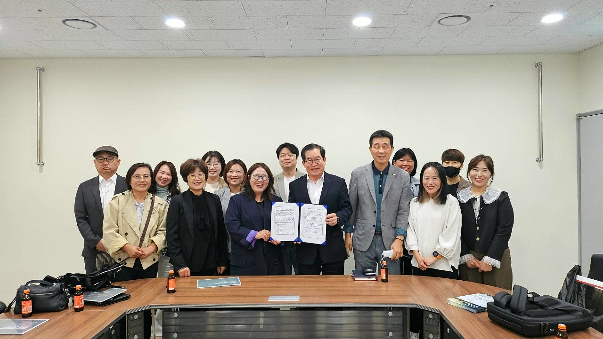

02 / 05
- 지원대상
- 사업자등록 후 3개월 이상 운영 중인 자영업자. 개인신용평점 하위 20%, 기초생활수급자·차상위계층, 근로장려금 신청자격 요건 등 미소금융 자격요건 확인 필요
- 자금용도
- 제품·원재료 구입 등 사업 운영자금
- 대출금리
- 상환 연 4.5%
거치 연 2.0%성실상환 금리인센티브의 적용 여부와 조건을 확인하세요. 금리 적용 기준 보기 ↗
- 대출기간
- 거치 6개월 이내 · 상환 5년 이내
- 확인사항
- 만 19–34세 청년은 청년운영자금으로 상담합니다. 업종, 소득·신용 및 상환능력 등 세부 요건은 별도 심사합니다.
03 / 05
- 지원대상
- 만 19세 이상 34세 이하 청년 자영업자. 사업 운영기간 및 미소금융 소득·신용 자격요건 등 확인 필요
- 자금용도
- 청년 자영업자의 사업 운영자금
- 대출금리
- 상환 연 4.5%
거치 연 2.0%성실상환 금리인센티브의 적용 여부와 조건을 확인하세요. 금리 적용 기준 보기 ↗
- 대출기간
- 거치 2년 이내 · 상환 5년 이내
- 확인사항
- 연령만으로 지원이 확정되는 것은 아닙니다. 사업 현황과 상품별 요건, 상환능력을 함께 확인합니다.
04 / 05
- 지원대상
- 만 19–34세 미취업 청년 또는 재직·창업 1년 이내 청년. 미소금융 신용·소득 요건 확인 및 ‘청년 모두를 위한 재무상담’ 이수 필요
- 자금용도
- 취업·자격증 취득, 창업 준비 및 초기 정착 등 사회 진입 자금
- 대출금리
- 연 4.5%
재무상담 이수 필수성실상환 금리인센티브의 적용 여부와 조건을 확인하세요. 금리 적용 기준 보기 ↗
- 대출기간
- 거치 6년 이내 · 상환 5년 이내
- 확인사항
- 자금용도와 상환계획을 확인합니다. 재무상담 연계 및 필요한 증빙자료는 전화상담으로 안내합니다.
05 / 05
- 지원대상
- 사회적 배려대상자, 특별재난지역 거주자, 전세사기·불법사금융·보이스피싱 피해자, 일정 요건을 충족한 미소금융 성실상환자 등
- 자금용도
- 금융취약계층의 생계 안정 자금
- 대출금리
- 상환 연 4.5%
거치 연 3.0%성실상환 금리인센티브의 적용 여부와 조건을 확인하세요. 금리 적용 기준 보기 ↗
- 대출기간
- 거치 1년 이내 · 상환 5년 이내
- 확인사항
- 개인신용평점 하위 50%이면서 연소득 3,500만원 이하인 분도 대상에 포함될 수 있습니다. 대상 유형별 요건과 증빙을 확인하고 심사합니다.
성실상환 금리 안내
성실한 상환을 위한,
금리 적용 기준.
금리인센티브·가산금리 제도 적용대상 대출에 한합니다.
대출을 이용 중이거나 상담을 준비하고 있다면 함께 확인하세요.
평가와 적용기간3개월을 살펴보고,
3개월을 살펴보고,
다음 3개월에 적용합니다.
거치기간을 제외한 상환기간에 3개월 단위로 성실상환 여부를 판단하여 다음 3개월의 이자율을 정합니다.
상환기간 3개월 평가→다음 3개월 금리 적용
상품별 적용 여부와 실제 금리는 법인 상담에서 확인해 주세요.
| 해당 3개월의 연체일수 | 다음 3개월 금리 |
|---|---|
| 5일 이하 | 1.0%p 인하성실상환 금리인센티브 |
| 6~30일 | 기준이자율 적용금리인센티브·가산금리 미적용 |
| 31일 이상 | 1.0%p 인상연체에 따른 가산금리 |
매뉴얼에 명시된 적용 제외 상품
- 임대주택보증금대출
- 취약계층자립자금
- 취약계층 교육비대출
- 취약계층임차보증금대출
- 무등록사업자의 창업·운영자금
특별 금리인하와의 중복 적용 제한
- 청년 전역자에게 제21조 제6항의 특별 금리인하를 적용한 경우
- 특별재난지역 등 거주자에게 제21조 제7항의 금리인하를 적용한 경우
위 금리인하를 적용한 경우에는 이 금리인센티브·가산금리를 중복 적용하지 않습니다.
상환 계산에는 성실상환 금리인하와 연체에 따른 가산금리를 자동 반영하지 않습니다.
2026.07.01 미소금융 업무매뉴얼 · 9–10쪽 · 제21조 제3항 제1호, 제6항 제2호, 제7항 제2호 기준
AT A GLANCE
지원상품 한눈에 비교하기
| 상품 | 최대 한도 | 금리·조건 | 기간 |
|---|---|---|---|
| 사회연대금융 | 1억원 | 연 4.5% 우대요건 충족 시 연 4.0% | 최대 6년 (거치 2년 이내 포함) |
| 자영업자 운영자금 | 2,000만원 | 상환 연 4.5% 거치 연 2.0% | 거치 6개월 이내 · 상환 5년 이내 |
| 청년운영자금 | 3,000만원 | 상환 연 4.5% 거치 연 2.0% | 거치 2년 이내 · 상환 5년 이내 |
| 청년 미래이음 대출 | 500만원 | 연 4.5% 재무상담 이수 필수 | 거치 6년 이내 · 상환 5년 이내 |
| 금융취약계층 생계자금 | 500만원 | 상환 연 4.5% 거치 연 3.0% | 거치 1년 이내 · 상환 5년 이내 |
2026.07.01 법인 안내 기준. 창업자금·시설개선자금의 신규 신청·실행은 중단되었습니다 (일반 미소금융 기준).
최종 조건은 상담 및 심사를 통해 확인합니다. 청년·취약계층 상품 금융위원회 안내
LET’S TALK
혼자 고민하지 마세요.
가까이에서 듣겠습니다.
나에게 맞는 지원이 있는지,
전화 한 통으로 먼저 이야기 나눠보세요.
미소금융 부산중구법인
부산 중구에서
만나 뵙겠습니다.
부산광역시 중구 중앙대로 21서민금융통합지원센터 (우) 48955
- 상담시간
- 평일 09:00–18:00
- 점심시간
- 12:00–13:00
- 팩스
- 051-255-0076
주말·공휴일 휴무 · 방문 전 전화 문의 권장
네이버 지도로 길찾기

01 / 05사회적경제기업
사회연대금융
지역에 좋은 변화를 만드는 기업의 든든한 금융 파트너
우대요건 충족 시 연 4.0%
BEFORE YOU APPLY
신청 전, 조건을 한 번 더 확인하세요.
자금용도에 따라 상환방식이 달라집니다. 기업의 상황과 심사 결과를 함께 확인합니다.
자금별 기간·상환방식
지원이 제한되는 경우
요건에 해당하면 연 4.0%
- 협약기관 회원사 및 우수기업 등 우대요건에 해당하는지 확인합니다.
- 신용보증기금 사회적가치평가 결과가 우대요건에 부합하면 금리 혜택을 적용합니다.
- 경남사회적기업협의회 회원사는 업무협약에 따른 우대금리 적용 여부를 상담할 수 있습니다.
경남사회적기업협의회 협약 안내2026.07.01 법인 안내 기준 · 반기별 배정 재원 내 지원 · 최종 조건과 우대금리 적용 여부는 상담·심사를 통해 결정합니다.
GET YOUR DOCUMENTS READY
상담 후, 온라인 평가자료를 준비해 주세요.
기업신용평가와 사회적가치평가에 필요한 자료를 각 기관에 제출합니다.
기업신용평가 서류 제출
NICE 원클릭 서비스에서 기업신용평가에 필요한 서류를 제출합니다.
법인 공동인증서를 준비해 주세요. 서류 접수 완료 후 익영업일에 신용평가 결과를 확인합니다.
NICE 서류 제출사회적가치평가 자료 제출
신용보증기금 사회적가치평가센터에 증빙자료를 올려 우대요건 충족 여부를 확인합니다.
자료를 제출하려면 KODIT 기업회원 가입이 필요합니다.
KODIT 자료 제출사회연대금융 진행절차
서류 접수부터 약정까지, 네 단계를 거칩니다.
상담·온라인 서류접수
상품 요건을 상담하고 온라인 평가자료를 제출합니다.
현장실사·적격 심사
경영 현장을 확인하고 지원요건을 심사합니다.
융자위원회 심의
심의·의결을 거쳐 지원 여부와 조건을 결정합니다.
약정·대출금 실행
최종 약정을 체결하고 대출금을 지급합니다.